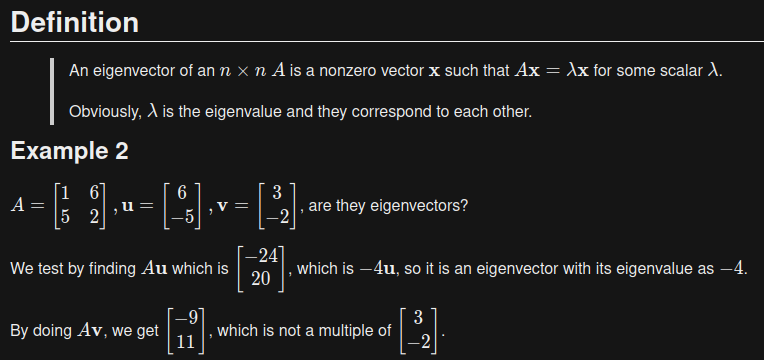

Background
First of all, a relevant meme. I promise you'll understand later:
Trust me. You'll get it later.
Alright, actual background.
So, like many people, I type decently fast. I can regularly break 100 WPM as proven by my TypeRacer profile, which also shows the time I spent bored in my computer science class racing people online in order to finally break the 100 WPM barrier.
Like some nerds, I also enjoy Markdown very much. I believe it's a super efficient way of formatting simple documents, such as notes.
And like some other nerds, I enjoy LaTeX, the way of typesetting fancy math equations.
Why is this relevant?
When college was starting, I finally realized I can get rid of handwritten notes and start typing for once, which will be so much faster. One of my friends said that he uses paper because it's faster and easier, and then I decided to massively flex on him to prove a point by opening TypeRacer.
But what note editor do I choose? Do I use that Evernote online stuff that I don't like? Do I use Microsoft Word which I don't have because I'm on Linux? Do I use LibreOffice Writer? Do I learn emacs and gain a 6 foot beard?
Also, what about math notes? I'm an engineer
They called me a mad man.
It turns out, with my typing speed, I am able to keep up with transcribing my professor's whiteboard math into LaTeX just a hair short of real-time.
I definitely feel about as fast as those around me writing my notes.
Every time I tell someone that I write my math notes in LaTeX, they call me insane. I don't blame them, it's a pain, but it's so pretty.
However, I don't like LaTeX documents, so I'll stick with Markdown notes with LaTeX added in.
The Final Showdown of Markdown Editors
Obviously, I decide to use one of the many Markdown editors, but I'm really picky. Here are my criteria:
- No Electron apps whatsoever. Electron is an ungodly inefficient approach, although a necessary evil.
- Fast
- Looks pretty
- Nice
- Not bad
- Work offline, hopefully
- Obviously free and open source
Yeah, so there go half of the Markdown apps since they're Electron apps or online, or both.
My marriage with Remarkable!
I found out that Remarkable is a free and open source note editor written in Python that uses WebKit GTK to do its work. It also includes MathJax, meaning LaTeX support.
It ticks all of my boxes! It's offline, looks pretty, isn't Electron, FOSS, not bad, etc
My divorce with Remarkable :(
Once you start to type lots of math with Remarkable, you start to notice the following:
- Light theme hurts to read
- MathJax is incredibly slow. Every key press in the Remarkable editor is almost like a refresh in the preview pane, meaning MathJax takes a few seconds after typing in order to render.
However, it's free and open source, meaning I can modify it however I want!
My child with Remarkable
Continuing the marriage analogy, I forked Remarkable to solve those two issues. I decided to use KaTeX, an incredibly fast LaTeX web renderer. I'm not kidding when I say this is fast. If you've used MathJax or visited any website with MathJax (shoutout to Paul's Online Notes for being an example in case you're unfamiliar), you'd know and you'd be used to it.
KaTeX is instant.
You can go ahead and see my dark themed KaTeX Remarkable fork on my GitHub profile. Notice: my GitHub fork is not for others to reproduce. It is, quite literally, a place where I just stored the changes I made. The way I install it is to install Remarkable from the Arch User Repository, then overwrite it with my files. I do not have any means of distributing my fork other than GitHub. You are on your own.
Managing my notes
Obviously, I should be able to have my notes on multiple devices. I don't just want to have it on my laptop. If I wanted to haul around something big everywhere just to study for classes, I'd be writing on paper!
Slander aside, I needed some way to sync my notes to my PC, phone, and server. I like my redundancy.
And what better way of syncing files than Syncthing? This is my favorite file syncing app, and I find it essential.
Sharing my notes on my website
After a friend of mine kept on asking for my notes and proceeding to get angry when I would give him a Markdown file, I decided to make an easier way of sharing my notes: automatic.
Since I have a whole website just sitting there, and I have Syncthing syncing to my server automagically, and Remarkable is literally just a GTK WebKit renderer with a Python backend, I decided to instantly use PHP and Python magic to make this a real site.
Do you wish to see my awful notes for differential equations and linear algebra? Well you're in luck! You can see an example of fancy notes, here's some linear algebra UPDATE: I am no longer hosting that mess due to eventually switching to Obsidian.
Image preview of my notes website:

You can see the source code for the website on my Github, of course.
All this work because I can barely read my own handwriting. Isn't that funny?